사출(프레스)금형설계기사 (2008-05-11 기출문제)
1과목: 금형설계
1. 사출금형의 콜드 슬러그 웰(Cold Sulg Well)을 설명한 것이다. 이 중 가장 올바른 것은?
- 금형이 열릴 때 스프루를 쉽게 빼내기 위해 캐비티 외측에 설치되는 구멍이다.
- 성형품을 밀핀으로 빼내기 위해 성형품의 외측 보다 약간 들어가 있는 구멍이다.
- 사출시 금형 속으로 재료가 통과할 때 냉각되어 성형불량을 일으키므로 이를 방지하기 위한 스프루 하단 또는 너러 끝에 설치한 구멍이다.
- 러너 시스템을 통과하는 성형재료는 압력강하 없이 빠른 시간 안에 흘러 보내도록 하기 위해 가동측 플레이트에 설치한 구멍이다.
(정답률: 100%)

2. 다음 중 사출금형 로케이트 링(locate ring)의 기능을 올바르게 설명한 것은?
- 사출성형기의 이젝터 핀을 안내해 주는 기능
- 금형의 스프루 부시 중심과 성형기의 노즐 중심을 일치시키는 기능
- 금형을 성형기에 부착할 때 고정측과 가동측을 구분해 주는 기능
- 유압실린더를 금형에 부착할 때 안내해 주는 기능
(정답률: 92%)
3. PET병과 같은 용기를 성형하는데 적합한 성형법은?
- 사출성형
- 압출성형
- 블로우성형
- 압축성형
(정답률: 93%)
4. 성형품의 이젝터 기구에서 스트리퍼 플레이트 방식에 대한 설명으로 올바른 것은?
- 국부적으로 큰 밀어내기 힘을 필요로 할 경우에 유리하다.
- 밀어낼 때 측벽에 큰 저항이 있는 상자 모양이나 원통모양의 성형품에는 사용하지 않는다.
- 살 두께가 얇고, 외관상 이젝터 자국이 거의 남지 않으므로 투명 성형품에 적합하다.
- 성형품에 크랙, 백화, 변형이 생기기 쉽다.
(정답률: 87%)
5. 파팅 라인을 취하는 방법을 설명한 것으로 틀린 것은?
- 금형 열림의 방향에 수직인 평면으로 한다.
- 눈에 잘 띄는 위치 또는 형상으로 한다.
- 언더컷을 피할 수 있는 곳으로 택한다.
- 마무리가 잘 될 수 있는 위치 또는 형상으로 한다.
(정답률: 93%)
6. 성형품이 운모와 같이 층상으로 되어 있어 벗겨지는 상태를 말하며, 융합하기 어려운 수지를 혼합하거나 금형의 온도, 수지의 온도가 아주 낮아 성형품이 급격히 냉각할 때 발생하는 현상은?
- 은줄현상
- 취약현상
- 표층 박리
- 크랙현상
(정답률: 89%)
7. 러너리스 금형에서 러너 형판의 러너를 가열 할 수 있는 시스템을 내장시켜 러너 내의 수지온도를 일정하게 유지시킬 수 있는 것은??
- 핫 러너
- 콜드 러너
- 웰타입 노즐
- 인슐레이티드 러너
(정답률: 96%)
8. 사출금형 부품인 스프루 부시의 설계에 대한 설명으로 가장 적합한 것은?
- 스프루 부시 R은 노즐 선단 r보다 0.5~1mm 정도 큰 것이 좋다.
- 스프루 입구의 지름 D는 노즐 구멍 지름 d보다 1.0~2.0mm 정도 작게 한다.
- 스프루 구멍의 테이퍼는 1˚이하로 한다.
- 스프루 길이는 될 수 있는 한 길게 하는 것이 좋다.
(정답률: 81%)
9. 물통이나 컵과 같은 성형품을 밀어 내기시 진공상태로 되는 깊고 얇은 성형품을 밀어내기에 가장 적당한 방식은?
- 가이드 핀 이젝터 방식
- 에어 이젝터 방식
- 슬리브 이젝터 방식
- 이젝터 핀에 의한 방식
(정답률: 95%)
10. 성형품 치수가 200㎜, 성형수축률 8/1000 일 경우 상온에서 금형치수는 약 ㎜ 인가?
- 180.5
- 150.8
- 210.8
- 201.6
(정답률: 87%)
11. 전단가공시 블랭크가 펀치에 달라붙는 것을 방지할 수 있게 설치하는 것은?
- 맞춤핀
- 키커핀
- 스톱핀
- 리턴핀
(정답률: 85%)
12. 드로잉 가공에서 가공된 용기 바닥 부분의 파단 원인으로 옳지 않은 것은?
- 블랭크 홀더의 압력이 너무 크다.
- 드로잉 속도가 너무 느리다.
- 클리어런스가 너무 작다.
- 펀치 또는 다이의 모서리 반지름이 너무 작다.
(정답률: 72%)
13. 프로그레시브 금형에서 직접 파일럿 핀을 사용해야 되는 경우는?
- 블랭크에 뚫린 구멍을 그대로 사용할 경우
- 구멍의 치수 정밀도가 너무 높은 경우
- 구멍이 너무 작은 경우
- 구멍위치가 블랭크의 가장자리에 너무 가까울 경우
(정답률: 72%)
14. 전단금형에서 편측 클리어런스(clearance)를 구하는 공식은?(단, C : 편측 클리어런스(%), A : 다이의 직경(㎜), B : 펀치의 직경(㎜), t : 가공 소재의 두께(㎜)이다.)
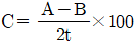
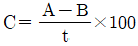
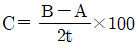
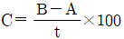
(정답률: 78%)
15. 다음 그림과 같이 제품의 플랜지 부분에 주름이 생기는 원인으로 가장 적합한 것은?
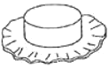
- 펀치와 다이의 맞물림 상태가 불완전하여 한쪽으로 쏠려 있다.
- 펀치와 다이의 모서리 반지름이 너무 작다.
- 재료에 적합한 윤활성이 좋은 드로잉 유를 사용했다.
- 펀치와 다이 사이의 클리어런스가 너무 작다.
(정답률: 64%)
16. 다음 중 평행정도가 우수하며, 높은 강성과 펀치·다이의 정밀한 안내가 되므로 클리어런스가 적거나, 대량생산의 경우 적합한 다이 세트의 종류는?
- BB형
- CB형
- DB형
- FB형
(정답률: 80%)
17. 프로그레시브 금형에서 이송 불량이 생기면 재로에 의해 가동 핀이 밀어 올려지고, 이것과 연동하는 횡 방향의 밀핀(Push pin)에 의해 마이크로 스위치를 누르는 검출장치는?
- 미스 피드 검출장치
- 좌굴 검출장치
- 재료의 유무 검출장치
- 제품 이젝터 검출장치
(정답률: 97%)
18. 다음 중 다이 세트(die set)의 특징을 설명한 것으로 틀린 것은?
- 제작이나 분해 조립할 때 편리하다.
- 금형의 설치 및 작업이 능률적이다.
- 가공 중 분력에 의한 파손, 운반 및 보관 중 파손이 많다.
- 금형의 수명이 연장된다.
(정답률: 91%)
19. 프레스 가공 분류에서 전단가공에 속하지 않는 것은?
- 블랭킹
- 셰이빙
- 코이닝
- 트리밍
(정답률: 91%)
20. 프레스 램을 하사점까지 내린 상태에서 프레스 램 밑면과 볼스터 윗면과의 직선거리를 무엇이라고 하는가?
- 슬라이드 조절량
- 하중 능력
- 스트로크 수
- 다이하이트
(정답률: 91%)
2과목: 기계제작법
21. 비교적 대형 공작물의 평면가공에 사용하는 것은?
- 플레이너
- 셰이퍼
- 슬로터
- 브로치
(정답률: 84%)
22. 대형 공작물이나 불규칙한 형상의 공작물을 가공하는데 사용하며 상자모양의 캐리어에 공작물을 올려 놓고 사용하는 지그는?
- 트리니언 지그
- 멀티스테이션 지그
- 리프 지그
- 플레이트 지그
(정답률: 81%)
23. 와이어 컷 방전가공기의 특성에 대한 설명으로 틀린 것은?
- 담금질된 강이나 초경합금의 가공은 불가능하다.
- 항상 새로운 적극의 소모로 가공되기 때문에 표면 거칠기가 양호하다.
- 복잡한 공작물 형상이라도 분할하지 않고 높은 정밀도의 가공이 가능하다.
- 가공 여유가 적고 전(前)가공이 불필요하며 직접 형상을 얻을 수 있다.
(정답률: 70%)
24. 프레스 금형에서 정밀한 펀치나 다이 제작에 가장 적합한 장비는?
- 와이어 컷 방전 가공기
- 머시닝 센터
- 플레이너
- CNC 선반
(정답률: 91%)
25. 드릴 작업할 때 칩의 제거는 어떤 방법이 가장 안전한가?
- 회전시키면서 막대로 제거
- 회전시키면서 부러쉬로 제거
- 회전을 중지시킨 후 손으로 제거
- 회전을 중지시킨 후 부러쉬로 제거
(정답률: 77%)
26. 선반에서 가늘고 긴 공작물을 가공할 때에 발생하는 미세한 떨림을 방지하기 위하여 사용하는 부속 장치는?
- 면판
- 돌림판
- 바이트
- 방진구
(정답률: 82%)
27. CNC머시닝 센터에서 직경이 20mm인 엔드밀로 주철을 가공하고자 할 때 주축의 회전수는 약 몇 rpm인가? (단, 주철의 절삭속도는 50m/min 이다.)
- 397
- 796
- 1191
- 1591
(정답률: 78%)
28. 슈퍼피니싱에 사용되는 연삭액으로 가장 적합한 것은?
- 비눗물
- 파마자 기름
- 경유
- 그리스
(정답률: 81%)
29. 방전가공에 있어서 가공칩의 배출을 위한 방법으로 적절하지 않는 것은?
- 분출법
- 흡인법
- 분사법
- 혼합법
(정답률: 65%)
30. 게이지 블록, 리미트 게이지, 플러그 게이지의 최종 마무리 가공에 사용하는 가공방법으로 가장 적합한 것은?
- 밀링
- 래핑
- 초음파 가공
- 방전가공
(정답률: 79%)
31. 단조나 주조품의 경우 표면이 울퉁불퉁하여, 볼트나 너트를 체결하기 곤란한 경우에 볼트, 너트가 닿을 구멍 주위 부분만을 평탄하게 절삭하는 방법은?
- 카운터 싱킹
- 리밍
- 드릴링
- 스폿 페이싱
(정답률: 76%)
32. 다음 중 제품의 정밀도보다도 생산속도를 증가시키기 위해 공작물의 윗면이나 내면에 설치하여 사용하는 지그는?
- 형판 지그
- 각판 지그
- 상자형 지그
- 분할 지그
(정답률: 56%)
33. 금형을 제작할 때 보호구의 활용을 설명한 것이다. 틀린 것은?
- 핸드 그라이더 작업시 보호안경을 착용한다.
- 무거운 금형운반시 안전화를 착용한다.
- 전기 폴리싱 작업시 앞치마를 착용한다.
- 콘터머신 작업시 장갑을 착용한다.
(정답률: 93%)
34. 외경 70㎜, 길이 220㎜의 연강봉을 초경바이트로 절삭속도 80m/min, 이송량 0.2m/rev로 황삭 절삭을 1회 할 때 가공시간은 약 몇 분인가?
- 1분
- 2분
- 3분
- 4분
(정답률: 69%)
35. 회전하는 통속에 가공물, 숫돌입자, 가공액, 콤파운드 등을 함께 넣고 회전시켜 서로 부딪치며 가공되어 매끈한 가공 면을 얻는 가공법은?
- 슈퍼피니싱
- 연삭
- 밀링
- 배럴 가공
(정답률: 80%)
36. 아래 도면과 같이 A→B 로 절삭할 때 지령을 증분값으로 나타낸 것 중 맞는 것은?
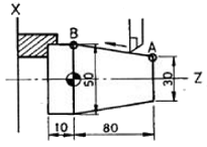
- G01 X30.0 Z80.0 F0.2;
- G01 X50.0 Z10.0 F0.2;
- G01 U20.0 W-80.0 F0.2;
- G01 U50.0 W-10.0 F0.2;
(정답률: 85%)
37. 다음 중 전해 연마 가공의 특징을 설명한 것이다. 틀린 것은?
- 가공변질층이 없고 평활한 면을 얻을 수 있다.
- 알루미늄, 구리, 황동, 아연 등을 연마할 수 있다.
- 가공면에서는 방향성이 있다.
- 내마멸성, 내부식성이 향상된다.
(정답률: 64%)
38. 재료를 소성가공함에 따라 경도와 강도가 증가하지만 그 반대로 연신율이 감소하는 현상은?
- 질량효과
- 영구변형
- 가공경화
- 시효경화
(정답률: 77%)
39. 프레스가공의 종류에서 전단가공에 해당 되는 가공은?
- 플랜지 가공
- 노칭 가공
- 컬링 가공
- 시이밍 가공
(정답률: 84%)
40. 다음 중 레이저 가공기의 특징으로 바르게 설명한 것은?
- 접축 가공이므로 공구의 마모가 있다.
- 금속 및 비금속 가공이 가능하다.
- 열에 의한 변형이 심하다.
- 자동가공이 불가능하다.
(정답률: 81%)
3과목: 금속재료학
41. 오스테나이트(austenite)의 현미경 조직을 갖는 면심입방격자를 갖는 철은?
- α철
- β철
- γ철
- δ철
(정답률: 86%)
42. 다음 중 고속도 공구강에서 요구되는 성질과 가장 관련이 없는 항목은?
- 내충격성
- 고온경도
- 전연성
- 내마모성
(정답률: 84%)
43. 다음 중 비파괴 시험이 아닌 것은?
- 자기 탐상법
- X선 검사법
- 금속현미경 검사법
- 초음파 탐상법
(정답률: 60%)
44. 고급시계, 정밀 저울 등의 스프링 및 정밀기계 부품에 사용되는 불변강은?
- 인청동
- 하스텔로이
- 엘린바
- 인코넬
(정답률: 95%)
45. 강의 물리적 성질을 설명한 것 중 옳은 것은?
- 비중은 탄소량의 증가에 따라 증가한다.
- 비열은 탄소량의 증가에 따라 감소한다.
- 열전도도는 탄소량의 증가에 따라 증가한다.
- 열팽창계수는 탄소량의 증가에 따라 감소한다.
(정답률: 72%)
46. 다음 중 열가소성 수지가 아닌 것은?
- ABS 수지
- 페놀 수지
- 폴리에틸렌
- 폴리스티렌
(정답률: 64%)
47. 강에서 열처리 조직으로 경도가 가장 큰 것은?
- 오스테나이트
- 마텐자이트
- 페라이트
- 펄라이트
(정답률: 88%)
48. 표면만 단단하고 내부는 회주철로 되어있어 강인한 성질을 가지며, 압연용 롤, 분쇄기 롤, 철도 차량 등 내마멸성이 필요한 기계 부품에 사용되는 특수 주철은?
- 칠드 주철
- 구상흑연 주철
- 고급 주철
- 흑심가단 주철
(정답률: 75%)
49. 탄소강을 담금질할 때 재료의 내부와 외부에 담금질 효과가 서로 다르게 나타나는 현상을 무엇이라고 하는가?
- 노치 효과
- 바우싱거 효과
- 질량 효과
- 비중효과
(정답률: 52%)
50. 고체내에서 온도의 변화에 따라 일어나는 동소변태란?
- 첨가원소가 일정량 초과할 때 일어나는 변태
- 단일한 고상에서 2개의 고상이 석출되는 변태
- 단일한 액상에서 2개의 고상이 석출되는 변태
- 한 결정구조가 다른 결정구조로 변하는 변태
(정답률: 91%)
51. 페놀수지라고도 하며 석탄산, 크레졸 등과 포르말린을 반응시킨 것으로서 도료, 접착제로 사용하며, 석면 등을 혼합하여 전화기, 전기소켓, 스위치 등 전기기구로 사용되는 것은?
- 베이클라이트
- 셀룰로이드
- 스티롤 수지
- 요소 수지
(정답률: 83%)
52. 차량, 건축 등에 사용되는 구조용 강으로 듀콜강(ducole steel)이란?
- 저 망간강
- 저 코발트강
- 고 크롬강
- 고 니켈강
(정답률: 48%)
53. 다음 금속 중에서 용융점이 가장 높은 것은?
- V
- W
- Co
- Mo
(정답률: 79%)
54. 플라스틱 합성수지의 공통성질을 설명한 것이다. 틀린 것은?
- 가공성이 크고 성형이 간단하다.
- 산, 알칼리, 유류 등에 약하다.
- 전기절연성이 좋다.
- 단단하나 열에 약하다.
(정답률: 67%)
55. 표점 거리가 100㎜, 시험편의 평행부 지름 14㎜인 시험편을 최대하중 6400 kgf로 인장 한 후 표점거리가 120㎜로 변화하였다. 이때 인장강도는 약 몇 kgf/mm2인가?
- 5.16
- 31.5
- 41.6
- 61.4
(정답률: 67%)
56. 열간 단조용 금형 재료의 구비 조건이 아닌 것은?
- 인성 및 피로 강도가 클 것
- 가공성이 좋을 것
- 내열성이 클 것
- 열전도도가 작을 것
(정답률: 77%)
57. 다음 중 순철의 자기변태온도는 약 몇 도인가?
- 210℃
- 768℃
- 910℃
- 1410℃
(정답률: 84%)
58. 노 내에서 페로실리콘, 알루미늄 등의 탈산제로 충분히 탈산 시킨 강은?
- 림드강
- 킬드강
- 세미킬드강
- 캡드강
(정답률: 79%)
59. 다음 중 황동의 화학적 성질과 관계가 없는 것은?
- 탈아연부식
- 고온탈아연
- 자연균열
- 고온취성
(정답률: 86%)
60. 강의 표면에 탄소를 침투시켜 표면을 경화시키는 방법은?
- 질화법
- 크로마이징
- 침탄법
- 고주파 담금질법
(정답률: 78%)
4과목: 정밀계측
61. 어느 가공물을 측정한 결과 84㎛였다. 측정기에 -6㎛의 기차(器差 : Instrument error)가 있다면 참값은?
- 90㎛
- 87㎛
- 81㎛
- 78㎛
(정답률: 79%)
62. 그림과 같이 V 블록의 홈에 바깥지름 D 및 d의 원통게이지를 끼웠을 때, 높이차가 h 이다. V홈의 각도 θ를 나타내는 식으로 옳은 것은?
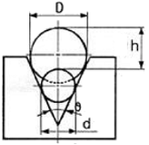
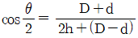
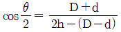
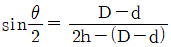
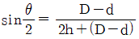
(정답률: 48%)
63. 최근에 많이 사용되는 자동 측정 기기를 크게 공기식, 전기식, 기계적 자동 측정기기의 3가지로 분류할 경우 기계적 자동 측정기기인 것은?
- 공기·전기 마이크로미터
- 접점붙이 공기 마이크로미터
- 전기 마이크로미터
- 접점붙이 다이얼게이지
(정답률: 83%)
64. 원형 부분의 기하하적 원으로부터의 차이가 크기를 측정하는 진원도는 크게 3가지 종류로 규정하고 있는데 그 종류에 포함되지 않는 것은?
- 반지름법에 의한 진원도
- 3점법에 의한 진원도
- 타원법에 의한 진원도
- 지름법에 의한 진원도
(정답률: 90%)
65. 측정자의 움직임 상태에 의한 다이얼 게이지의 종류를 열거하였다. 그 종류가 아닌 것은?
- 백 플런저(back plunger)형 다이얼 게이지
- 보통형 다이얼 게이지
- 정밀형 다이얼 게이지
- 지렛대식 다이얼 테스트 인디케이터
(정답률: 40%)
66. 미터나사를 최적 선경 dw = 2.886㎜의 3침을 사용하여 외측거리 M = 49.085㎜를 얻었다. 유효지름은 몇 ㎜인가?
- 44.756
- 44.672
- 44.444
- 44.834
(정답률: 28%)
67. 그림과 같은 간섭무늬로 평면도를 측정하였다면 사용광선의 파장 λ가 0.6㎛일 때 중심부와 원주변(圓周邊) 사이의 높이 차는 몇 ㎛인가
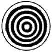
- 0.3㎛
- 0.6㎛
- 1.2㎛
- 2.4㎛
(정답률: 67%)
68. 사인 바(sine bar)의 호칭치수는 다음 중 어느 것에 의해 표시하는가?
- 지지 롤러의 외측거리
- 각도 측정의 최대거리
- 지지 롤러의 중심거리
- 측정면에서 롤러까지의 거리
(정답률: 68%)
69. 진직도(眞直道) 또는 평면도 측정에 사용되지 않는 것은?
- 직선자(straight edge)
- 울트라 옵티미터(ultra optimeter)
- 오토콜리메이터(autocullimator)
- 옵티컬 플랫(optical flat)
(정답률: 64%)
70. 공장에서 측정 기기의 정기검사시 필요한 측정기구를 운반하여 검사원이 순회하면서 행하는 방법은?
- 순회방식
- 간이방식
- 집중방식
- 자동방식
(정답률: 91%)
71. 레이저(Laser)의 특성을 설명한 것이다. 잘못 설명된 것은?
- 레이저 빛은 고순도의 단색성을 갖는다.
- 레이저 빛은 집속성이 좋다.
- 레이저 빛은 시간적, 공간적 간섭성이 높다.
- 레이저 빛은 저휘도성이다.
(정답률: 87%)
72. 환봉을 다이얼 게이지로서 그림과 같이 측정을 하였다면, 다음 중 무슨 측정을 하고 있는가?
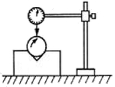
- 평면도
- 평행도
- 진원도
- 직각도
(정답률: 87%)
73. 다음 중 배압식 공기 마이크로미터의 0점 조정에 가장 적합하게 사용되는 것은?
- 플로팅 기구
- 조리개
- 레규레이터
- 노즐
(정답률: 50%)
74. 측정량의 변화에 대하여 지침의 흔들림의 크기를 말하며, 그 확대율을 지칭하는 용어는?
- 정도
- 감도
- 조정
- 보정
(정답률: 86%)
75. 한계 게이지에 의한 검사로 불합격된 부품에 관한 다음 설명 중 틀린 것은?
- 통과쪽이 불합격인 축의 경우는 허용치수보다 크기 때문이다.
- 통과쪽이 불합격인 구멍의 경우는 허용치수보다 작기 때문이다.
- 통과쪽이 불합격인 제품은 모두 재가공이 불가능한 것들이다.
- 정지쪽이 불합격인 축의 경우는 허용치수보다 작기 때문이다.
(정답률: 71%)
76. 우연오차에 관한 정규분포(가우스 분포) 곡선에서 표준편차 ±3σ에 들어가는 분포의 확률은 몇 %인가?
- 68.3%
- 85.2%
- 95.4%
- 99.7%
(정답률: 61%)
77. 국제적으로 사용빈도가 가장 높은 거칠기 측정방법으로
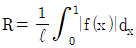
로 나타낸 것을 무엇이라 하는가?- 최대 높이 거칠기
- 10점 평균 거칠기
- 산술 평균 거칠기
- 제곱 평균 평방근 거칠기
(정답률: 67%)
78. 다음 그림은 표면 거칠기를 기록한 것이다. 산출한 기준 길이로 올바른 것은?
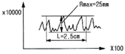
- 0.25㎜
- 0.125㎜
- 2.5㎜
- 25㎜
(정답률: 46%)
79. 전기 마이크로미터와 같이 기계적 변위를 전기적 양으로 변환하면 다음과 같다. 잘못 설명된 것은?
- 응답지연 시간이 짧으므로 자동검사, 자동제어에 쓰일 수 있다.
- 증폭이 쉽기 때문에 감도가 좋다.
- 신호처리는 용이하나. 연산은 곤란하다.
- 원격 측정, 원격 조정이 가능하다.
(정답률: 80%)
80. 평행도 또는 직각도를 측정시 필요한 측정기가 아닌 것은?
- 정밀 수준기
- 버니어캘리퍼스
- 광선 정반
- 오토콜리메이터
(정답률: 84%)